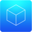

Android IMSI-Catcher Detector (AIMSICD)
Android open-source based project to detect and avoid fake base stations (IMSI-Catchers) or other base-stations (mobile antennas) with poor/…

AntiPrism
Live USB/memory card OpenELEC-based media server toolbox platform for securing the online presence, web browsing and communications.


ArkOS
arkOS is a lightweight software stack that runs on a Raspberry Pi to securely self-host your websites, email, files and more.


Cjdns
Cjdns is a networking protocol, a system of digital rules for message exchange between computers. "Instead of letting other computers connec…


Commotion
Uses mobile phones, computers, and wireless routers to create decentralized mesh networks.


Decentraleyes
Protects you against tracking through "free", centralized, content delivery. It prevents a lot of requests from reaching networks like Googl…


DragonFly BSD
DragonFly BSD is a free Unix-like operating system created as a fork of FreeBSD 4.8. Matthew Dillon, an Amiga developer in the late 1980s an…


Enigmabox
Plug and play cjdns appliance, offering a distributed and end-to-end encrypted telephony and email service.


FreedomBox
FreedomBox integrates privacy protection on a cheap plug server so everybody can have privacy.


FreeOTP
FreeOTP is a two-factor authentication application for systems utilizing one-time password protocols.

Freifunk
A non-commercial open grassroots initiative to support free radio networks around the world.


GPG for Android
A port of the whole GnuPG 2.1 suite to Android.
Gnu Privacy Guard (GPG) gives you access to the entire GnuPG suite of encryption software. …

Gpg4win
Gpg4win is an installation package for Windows (XP, Vista, 7 and 8) with software tools and manuals for email and file encryption on behalf …


Hubzilla
Hubzilla is a powerful platform for creating interconnected websites (hubs) featuring a decentralized identity, communications, and permissi…


KeePassDroid
KeePassDroid is an implementation of the KeePass Password Safe for Android. Read/write support for .kdb and KeePass 1.x. Read/write support …

KeePassX
Application for people with extremely high demands on secure personal data management. Saves many different types of information such as use…


Kolab Now
Secure Kolab accounts hosted in Switzerland for 8.99 CHF per month or 4.55 CHF for email-only accounts.


Kontalk
Phone number based messaging client for the masses, using XMPP and OpenPGP encryption. Backed by community-driven servers.


Litecoin
Litecoin (sign : Ł ; code : LTC) is a peer-to-peer cryptocurrency and open source software project released under the MIT/X11 license. Inspi…


NetBSD
NetBSD is an open-source Unix-like operating system descended from Berkeley Software Distribution (BSD), a Unix derivative developed at the …


nsupdate.info
A free dynamic DNS service. Use it to update an easy DNS name with your changing/hard-to-remember IP address. As we use the standard protoco…


Open Source Routing Machine
The Open Source Routing Machine or OSRM is a C++ implementation of a high-performance routing engine for shortest paths in road networks. Li…


Orweb
Proxy-capable and Privacy-aware Web Browser for use with Orbot's localhost 8118 proxy, or any HTTP proxy server.

OsmAnd
OsmAnd (OSM Automated Navigation Directions) is a map and navigation app that uses OpenStreetMap data.


Parabola GNU/Linux-libre
Libre, lightweight, and flexible GNU/Linux distribution based on Arch Linux.


PasswdSafe
Password Safe (Android Port). Stores passwords, site URLs, email addresses, notes and much more into encrypted container file, so you only n…
Password Safe
Password Safe (Windows/Linux), designed by Bruce Schneier. Stores passwords, site URLs, email addresses, notes and much more into encrypted …


Privacy Badger
Tracking blocker that tries to learn who is spying on you and then blocks these ads and invisible trackers.


Random Agent Spoofer
A privacy enhancing firefox add-on which aims to hinder browser fingerprinting.


Ring
Ring is a secure and distributed voice, video and chat communication platform that requires no centralized server and leaves the power of pr…

Riot
Riot is a secure collaboration app for group chat, file transfer and voice/video conferencing built on the decentralized Matrix ecosystem, p…


Scientific Linux
Scientific Linux (SL) is a Linux distribution produced by Fermi National Accelerator Laboratory and the European Organization for Nuclear Re…


Self-Destructing Cookies
Automatically delete cookies and local storage when they are no longer used by open browser tabs.

SemanticScuttle
SemanticScuttle is a social bookmarking tool experimenting with features like structured tags and collaborative tag descriptions.


SME Server
Simple distro based on CentOS with preconfigured mail, file sharing, web server, and more.


Tor
Tor (previously TOR, an acronym for The Onion Router)[not in citation given] is free software for enabling online anonymity. Tor directs Int…


Tox
Free and open-source, peer-to-peer, encrypted instant messaging and video calling software. The stated goal of the project is to provide sec…

Tunnelblick
Tunnelblick is a free, open source graphic user interface for OpenVPN on macOS. It provides easy control of OpenVPN client and/or server con…


wallabag
wallabag is a self hostable application for saving web pages. Unlike other services, wallabag is free (as in freedom) and open source.